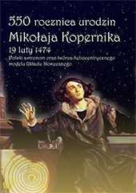
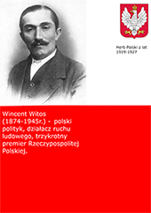
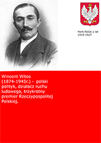
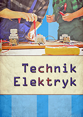
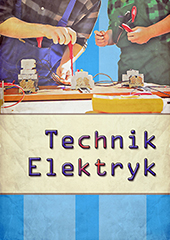
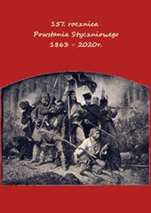
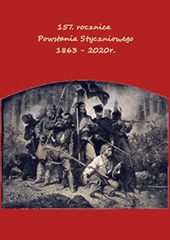

Grafika rastrowa



 



 graf_rastro 2D Mateusz Cichosz.png)
 graf_rastro 2D Kacper Dąbrowski Filip Maszota-2P.png)
 Subiel Wałęka.png)
 graf_rastro 2D Adam_Gemsa_Leon_Tomys_1P.png)
 graf_rastro 2D Hubert Stieler 1C.png)
 graf_rastro 2D Pedziwilk _ Szefler 1P.png)
 Wojciech Bazydło 1C.jpg)
 graf_rastro 2D Bohdan Harkovenko 1p.jpg)
 graf_wektor 2D Bohdan Harkovenko 1p.png)
 graf_wektor 2D Szymon Grotha Mateusz Szczepaniak 1P.png)
 graf_wektor 2D Adam Gemsa Leon Tomys 1P.png)
 grafi_wektor 2D Kocon Brzeski Kusmierski.png)
 graf_wektor 2D Patrick Wysocki 1C.png)
 grafika wekto 3D Oleksandr Solonychnyy 3E.png)
 grafika wektor 3D Kacper Labudda 3E.png)
 grafika wektor 3D Sebastian Graboś 3e.png)
 T Wodarczyk O Radczenkov 2p.png)
 Maciej Bicki 1c.png)
 Dawid Pobłocki 1P.png)
 Bicki Krakowiak.png)
 Mateusz Tuchowski 2F.png)
 Maszota_Dąbrowski_M_Iwanicki_1P.jpg)
 Sz P Markowscy 1p.png)
 Dabrowski Stencel 1P.png)


 


 



Przedstawione prace uczniów zostały zrealizowane podczas lekcji przedmiotów informatycznych (informatyka, witryny i aplikacje internetowe) w technikum Zespołu Szkół Energetycznych w Gdańsku.